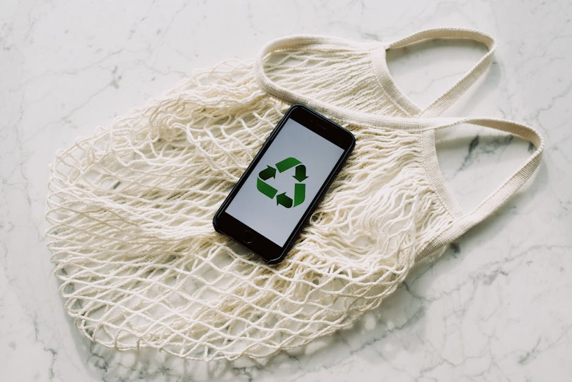

Bem-vindo ao TI-Verde 🌱
Conheça práticas sustentáveis na tecnologia da informação que ajudam o planeta e tornam as empresas mais eficientes.


Reciclagem de E-lixo
Reciclar corretamente equipamentos eletrônicos é essencial para o meio ambiente.
Cloud Sustentável
Computação em nuvem eficiente e com menor impacto ambiental.